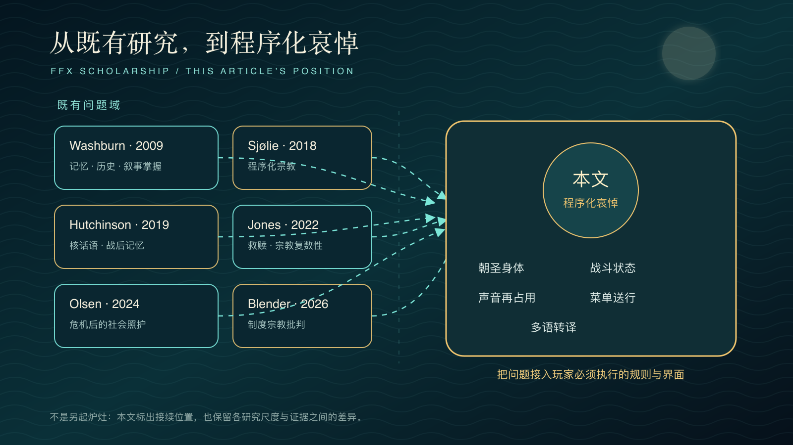
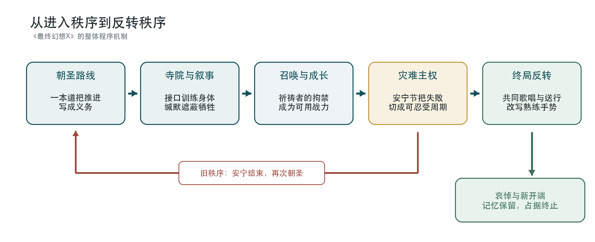
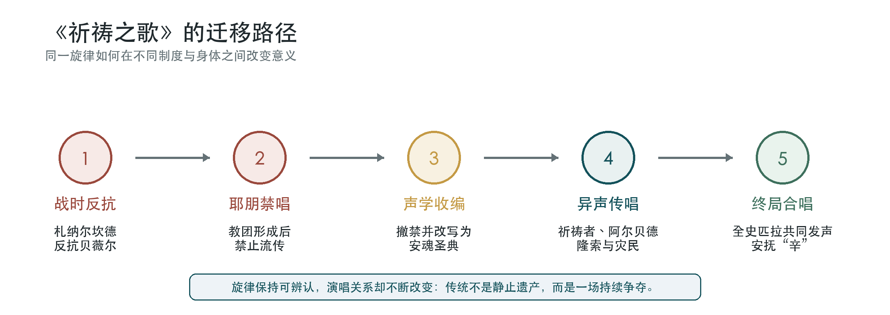
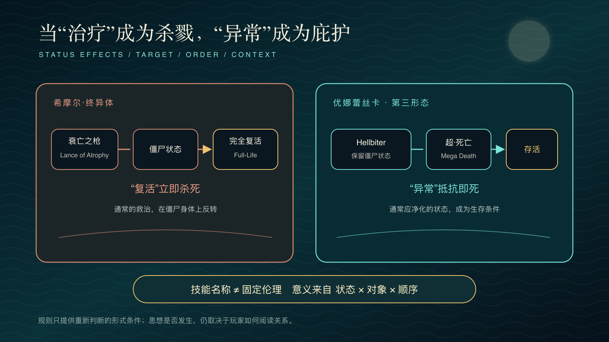
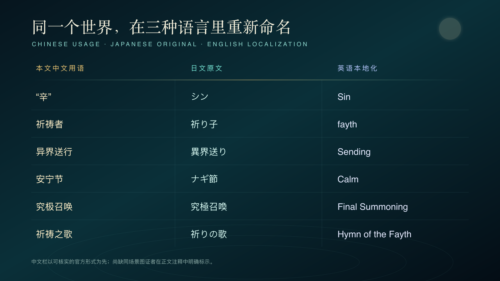

摘要
《最终幻想X》把牺牲秩序写进朝圣路线、寺院机关、战斗次序、召唤动画、《祈祷之歌》（祈りの歌／Hymn of the Fayth）与多语配音。玩家沿大体线性的主线道路前进，把祈祷者（祈り子／fayth）被禁锢的身体化作战力，也逐渐接受召唤士（召喚士／summoner）以死亡换取安宁节（ナギ節／Calm）的常识；结局却迫使同一双手反转熟练操作，逐一送别召唤兽（召喚獣／aeon），终止“辛”（シン／Sin）的再生。本文以“行路—回返—放下—转译”为四幕，以与为主轴，把这种由规则、界面、重复和不可逆删除完成的失去称为“”。、与说明秩序如何进入身体、知识和欲望；日本丧葬思想、冲绳／琉球空间与东亚战争记忆则检验解释的历史限度。耶朋（エボン／Yevon）由此显为垄断灾难解释、合法回应和牺牲分配的“”，梦中的札纳尔坎德（夢のザナルカンド／dream Zanarkand）则显为拒绝停止召唤的封闭纪念生态。旧传统没有被净化，却能在新的演唱与操作关系中成为终止循环的条件：记忆仍在，死者不再支配生者的未来。1
关键词：《最终幻想X》；整体游戏评论；；；灾难记忆；；游戏音乐；；游戏
译名说明：本文对《FINAL FANTASY X/X-2 HD Remaster》官方繁体中文资料中能够直接核实的专名采用官方形式并转换为简体字形；尚缺游戏内字幕图证的语句明确标为本文转译，不以流传译文冒充官方文本。游戏专名首次出现时按“中文（日文／英文）”标注，章节再保留完整比较。19
研究位置：既有研究已经从记忆与叙事控制、程序化宗教、救赎经验、核话语、制度宗教批判及危机后的社会照护等方向解释《最终幻想X》。本文不再把“耶朋是否腐败”当作待揭晓的结论，而把增量放在这些研究较少共同处理的层面：朝圣路线怎样训练身体，战斗状态怎样翻转生命与死亡的价值，声音怎样被收编又被重新使用，召唤菜单怎样把陪伴改写为送行，以及多语怎样重排的时间。24

序曲：水面上的舞者，屏幕前的见证人
序曲 · 声音浮出水面
全部話しておきたいんだ
提达独白 → 幻想
独白结束后接续幻想；随后循环播放幻想。
基利卡（キーリカ／Kilika）被“辛”摧毁以后，海还在动。优娜（ユウナ／Yuna）走上水面。杖划出圆弧，衣袖迎着风展开，亡者的幻光虫（幻光虫／pyreflies）从沉船与倒影之间升起。岸上的人低头哭泣。玩家不能替他们收殓，不能叫仪式停下，只能留在岸边，看这个世界第一次显露自己的死亡秩序。神学尚未来得及解释什么。镜头的远近、浪声、音乐与迟缓的步伐，已经让死亡成为所有人共同看见、却无人能够挽回的事。2

理解《最终幻想X》，要先从身体开始。史匹拉不是一张等候解码的象征表。它先是一条路：有方向，有速度，也有阻力。手握住控制器，身体沿窄路走向寺院，在随机遇敌中一次次停下，在存档水晶前短暂喘息，又在漫长的召唤动画里等待巨大身体降临。布伦丹·基奥对游戏身体的分析，可以概括为“”：玩家并非站在世界之外观看神话，而是借输入、反馈、节奏和视听，让自己的身体暂时接上另一个身体。本文把这一机制进一步称为“身体—游戏耦合”。提达（ティーダ／Tidus）是接口，却不是透明的容器。他的无知、急躁与运动员姿态，决定最初看见什么，也替某些真相争取了暂时不被看见的时间。
伊恩·博格斯特所谓“”，指向规则与可操作过程本身所进行的论证。本文据此提出“”：游戏不只用对白告诉玩家应当放下，也先让召唤、成长与收集成为身体习惯，再迫使这些习惯承担失去的后果。它并不保证玩家接受某种唯一思想，却为理解、抵抗或拒绝牺牲秩序安排了一组可感、可重复的行动条件。
西田几多郎的，可以在这里提供一种有限的补充。身体—游戏耦合不是两个预先完整的主体接上一条线路；手指输入、提达的动作、镜头方向、道路阻力和同伴回应，共同生成一个能够行动的场所。关系先于孤立实体，却不意味着位置彼此等价：玩家不能成为提达，提达也不能替祈祷者决定何时停止做梦。场所若只剩包容一切的总体，反而会像梦城一样抹去谁在维持关系、谁不能退出。25
把异界送行理解成“日本佛教丧礼的游戏版本”，会抹去作品的混杂性。日本佛教的丧葬与追善实践，一直随寺檀制度、近代国家、城市化和家庭结构而重组；诵经、烧香、年忌供养与祖先祭祀既处理死后命运，也组织生者的关系。史匹拉借用水上送魂、供养、怨灵和彼岸想象，又把它们同天主教式层级、南岛舞蹈、幻想宗教与数字特效缝合。优娜不是“真实佛教”的巫女，耶朋也不是某一宗派的密码。真正相近的是结构：无人安置的死者会滞留、变形，继而伤害生者；仪式让记忆延续，也让占据停止。
《最终幻想X》随即把宗教问题推向政治。异界送行安置灾难中的普通死者，掌权的未被送行者（死人／しびと／unsent）却拒绝退场。米卡（マイカ／Mika）以职位延续行政，优娜蕾丝卡（ユウナレスカ／Yunalesca）以传统复制牺牲。希摩尔（シーモア／Seymour）则把耶朋的死亡逻辑推到极端，企图用所有人的死亡取消所有痛苦。三者并非同一种幽灵，却共同提出全作最早的问题：谁有资格决定死者何时离开？当死者仍握着职位、教义或军队，送行便不只是宗教仪式，也是解除主权的政治行动。3

第一幕 行路：身体先于教义
第一幕 · 记忆
在札纳尔坎德（ザナルカンドにて／To Zanarkand）
记忆在道路开始处回响
曲目浮出水面后自动循环。
一、朝圣不是背景，而是一台叙事机器
故事从废墟旁的一堆火开始。提达请同伴，也请屏幕外的人，听完“他的故事”。于是，海岛、港口、寺院与雪山尚未成为过去，已经被营火照成回忆。终点从一开始便在那里：札纳尔坎德。只是还不知道，抵达要用谁的死亡来证明。漫长倒叙终于回到同一堆火旁，提达的旁白停了。故事追上讲述它的此刻。再往前，便没有回忆替任何人担保；每一步都要在尚未被说出的未来里发生。4
首先要问：“谁知道？”提达是外来者，故事也主要借他的目光向前。优娜与护卫知道召唤士会死，沿途许多人也知道；玩家却同提达一起，被留在这项朝圣常识之外。第一次看见优娜微笑、露露（ルールー／Lulu）沉默、瓦卡（ワッカ／Wakka）热切谈论旅程，一切都仿佛理所当然。真相揭开以后，同样的表情才露出另一层光。被隐藏的从来不只是一条信息。知识被分给不同的人：有人承担死亡，有人守住沉默，有人隐约知情，也有人只接过英雄的故事。牺牲制度不需要欺骗所有人。敬意、体贴与没有说出口的话，已经足够让旅程继续。
缄默随后变成空间。旧式世界地图收缩成一条大体线性的路：岛屿、寺院、城市、平原、雪山，最后是废都。线性常被看作自由度的不足，在这里却成为命运的形状。每座寺院许诺新的力量；每得到一次召唤，优娜也离死亡更近一步。玩家为了成长不断前进，恰好走完耶朋替召唤士写好的进度。所谓“一本道”不只是制作限制，也是一种制度经验：战术可以选择，终点却暂时不能。
寺院试炼又把一本道压缩成一套操作语法。玩家必须触摸纹章，取出、携带并嵌入幻光球，按规定顺序开门、移动基座。身体完成正确输入，空间才会开放。反讽由此显现：耶朋在教义上谴责机械，圣殿内部却像一台巨大机器，以插槽、回路、移动墙和能量接口运行。宗教在这里掌握的是接口的分类权：哪些操作神圣，哪些知识有罪，又是谁可以触碰它们。5
试炼还把朝圣拆成两套重叠规则。主线路径要求最低限度的服从；“破坏幻光球”则开启隐藏宝箱，把神圣空间转换成完成度与奖励的优化问题。玩家一面扮演不懂教义的外来者，一面迅速学会把寺院阅读为机关表：这里有可拆卸的钥匙，那里有尚未领取的资源。程序在邀请玩家服从仪式的同时，也泄露了仪式可被分析、逆向和重新组合的机械结构。

杰克特（ジェクト／Jecht）幻光球则像散落在道路上的私人档案。它们不是全知旁白，而是带有拍摄者位置、遗漏和偏见的嵌入媒介。提达必须在父亲留下的影像中重新理解父亲；玩家也必须把当下道路与十年前的朝圣叠合起来。叙事因而不是线性信息输送，而是一次回返：现在不断在旧影像中发现自己的先例。真正的问题不再是“这一代能否比上一代更强”，而是“这一代是否只能成为上一代的重拍”。

二、被迫的笑：与圣女形象
路加（ルカ／Luca）之后，那阵过分响亮的笑常被剪下来，当作配音失败的证据。可一旦放回旅程，尴尬正是这场戏要留下的东西。优娜说，难过的时候也要练习笑。人们看着召唤士的脸，仿佛只要她没有害怕，世界便还可以继续。于是两人仰起头，发出不属于快乐的笑声。笑了很久，才真的笑了一下。声音由此露出的接缝：恐惧被压进呼吸，安宁被交给旁人。

在这里不负责诊断优娜，而追问她被要求认同怎样的理想形象。召唤士必须温柔、坚定、乐于牺牲，最好连死亡也不使别人不安。共同体把自身无法承担的恐惧寄托到她身上，再要求她以微笑证明恐惧已经被克服。她越成功地成为希望，就越难以作为一个害怕死亡的年轻人说话。
让我们听见这一点：笑声过长、呼吸不稳、身体僵硬，意义落在声音无法顺利贴合情绪的接缝上。镜头暂时收走移动、探索与战斗输入，玩家不能把笑“按得更自然”，只能忍受它持续到表演自行结束。这种低自由度形成一种观看伦理：尴尬不能被操作立即解决。
史又让这种不协调显出第二层技术含义。英语负责人亚历山大·O·史密斯回忆，语音长度必须严格贴合日语表演和引擎的触发时序；强笑在日英两种表演中，本就都应显得不自然。角色的与译者的技术劳动由此重叠：优娜把悲伤压进规定的公共表情，译者则把语句压进规定的声音时限。玩家此时还不知道她将赴死，容易先把尴尬归咎于演技。后来，游戏在阿尔贝德（アルベド／Al Bhed）“家园”让这一幕以无声回忆重现，同一画面才从喜剧变成死亡预告。6
这条温柔地把人送向牺牲的道路，还有更具体的创作史背景。野岛一成回忆，《X》筹划初期曾读过特攻队员及其家属留下的手记：车站送别时，家人明知眼前的人将赴死，仍担心途中是否受伤。由此进入故事核心的，不是死亡的简单赞美，而是知情者的觉悟与缄默，与一无所知的提达之间的落差。体贴并未站在制度外部。正因为送行仍含着爱，牺牲秩序才不只靠强迫运行。31
这项证言不能把优娜换算成特攻队员，也不能把史匹拉化为太平洋战争寓言。特攻属于日本帝国战争动员的具体制度；若只留下家属送行的悲壮与亲情，殖民战争、加害责任与被迫动员便会再次沉入背景。创作史在此不是解码钥匙，而是一道更严厉的检验：爱如何被制度借用，又怎样从献身的语言中夺回判断。
三、南方群岛：冲绳不是装饰，也不是答案
史匹拉最初以比塞德（ビサイド／Besaid）和基利卡的海风迎接玩家。脚本家野岛一成在《Fami通》二十周年访谈中回忆，冲绳旅行留下的意象推动了作品的“东方”方向；访谈旁注把「ティーダ」同冲绳语的太阳相连，也把优娜之名同当地语言和黄槿花联系起来。野村哲也则说，团队许多人想象的是“南国的亚洲”，他本人又有意把和风织入其中。二十五周年的 Square Enix 官方访谈里，北濑佳范再次把这一方向追溯到野岛：不是回到中世纪欧洲，而是选择稍带东方感的幻想。声音也从这片南方想象中取得材料。2001年发售活动上，植松伸夫说明，听见奄美大岛出身的 RIKKI 后，便决定由她演唱《素敵だね》。7
这些线索使史匹拉不同于以欧洲中世纪为默认坐标的奇幻世界，但“南方”不能只被赞美为热带美学。琉球王国在十九世纪被日本国家吞并，冲绳又经历地面战、长期美军治理与至今不对称的基地负担。游戏没有把这段历史逐项寓言化，比塞德也不等于现实冲绳；然而，当中央教团位于贝薇尔、禁忌与正统从中心向群岛扩散，而边缘岛屿承担灾难最直接的伤亡时，东亚读者有理由感到一种中心—边缘的历史回声。21
这类阅读必须保持双重克制：不能因为开发者谈到冲绳，就宣布全作是冲绳殖民史的隐喻；也不能只把冲绳当作阳光、织物、音乐与异国感的素材库。更稳妥的说法是：史匹拉的空间想象从日本列岛南缘与亚洲海域取得感性材料，而这些材料本身带着帝国、战争、观光和边缘化的历史阴影。阳光不是无辜的布景。它照见谁被放在世界中心，也照见谁被塑造成中心想象中的“南方”。

声音线索：在理解教义以前，玩家已经会听
声音线索 · 信仰
祈祷之歌（祈りの歌／Hymn of the Fayth）
被禁、被收编，又被共同唱起
进入《祈祷之歌》分析时浮出水面，并自动循环。
水承接这个世界的倒影，歌声承接它没有说完的过去。玩家尚未弄清耶朋·咒（エボン＝ジュ／Yu Yevon）、祈祷者与梦中的札纳尔坎德之间的关系，《祈祷之歌》已经在寺院与灾难的间歇里回来。没有器乐伴奏的人声在相近音区回旋，短句之间留着呼吸，余音像石室里的潮水，使不断向前的旅程暂时悬停。它唤起礼仪吟诵的听觉姿态，却不是格里高利圣咏、佛教声明或琉球祭歌的直接复制，而是为史匹拉制作的一种混合圣声。
声音常常比身体先到。寺院里，歌从墙后传来；进入祈祷者之间，才看见那些与召唤兽相连、被固定在圣像中的个别祈祷者。抵达嘎嘎泽特山，另一面墙又出现了：札纳尔坎德战争的幸存者在那里共同维持梦城。两类祈祷者形成于不同时间，召唤的对象也不同，不能合并成同一群体。相同之处在于，歌声离开了不能自由移动的身体；被召唤的存在则前往战场或远海，成为可操作、可居住的代理。眼睛后来才看见圣像与山壁。耳朵早已听见仍在劳动的身体。官方原声带把这支歌列为一个版本家族：寺院独唱、隆索族低沉的集体声部、阿尼玛版本孤立的音色，以及全史匹拉的合唱，都保留同一旋律轮廓，却一次次改变“谁在唱”。
这支歌很容易使解释者沉入“谜底已经揭晓”的兴奋，证据却须各归其位。Square Enix Music 的正式曲目表确认，《祈祷之歌》与瓦尔法雷、伊弗利特、隆索族、史匹拉等变体属于同一曲目家族。2021年《Fami通》二十周年开发者访谈又直接提出纵读所得的「祈れよエボン＝ジュ、夢見よ祈り子、果てなく栄え給え」；野岛一成随即说明，这首歌是他为阿尔贝德语设想完整语言体系、翻阅密码书时留下的“野心的残余”。因此，纵读机关与核心句子有开发者确认；但公开的原声带页面和雅马哈授权钢琴谱商品页并未展示可逐字核对的官方歌词矩阵。下面的音节分组与版式，是本文据游戏录音、循着访谈确认的纵读关系重新排列的声音，不是官方歌词页的摹本。8
A｜耳朵先听见的音节：本文据录音分组
イエユイ｜ノボメノ｜レンミリ｜ヨジュヨゴ
ハサ｜テカ｜ナエ｜クタマエ
B｜让声音转向的矩阵：本文按开发者确认的纵读机关重排
イ エ ユ イ
ノ ボ メ ノ
レ ン ミ リ
ヨ ジュ ヨ ゴ
↓ 祈れよ｜エボン＝ジュ｜夢見よ｜祈り子
ハ サ
テ カ
ナ エ
ク タマエ
↓ 果てなく｜栄えたまえ
横向听去，音节像尚未找到文字的祈祷；方向一转，命令才从声音深处浮出。开发者确认机关，却没有替语法结束争议。原句省去助词，「祈れよ」究竟以耶朋·咒为祈祷对象，还是直接向耶朋·咒发出命令，仍取决于补入何种关系。祈祷、做梦与无尽延续被压进同一结构，主客位置却没有完全封死：教团可以把它解释为服从，歌声也保留了命令神本身的可能。访谈确认纵读，本文重排矩阵，政治阅读则从句法留下的空处开始；三者在同一片水面相遇，仍各有边界。
蒂姆·萨默斯提醒我们，游戏音乐必须作为供游玩与互动的音乐来理解。玩家没有独立的“歌唱键”，却在数十小时的返回中学会辨认旋律、声源与场景重量；到终局，熟悉感变成战术知识。反复聆听是一套漫长的听觉教程：游戏先教耳朵记忆，随后才揭示谁曾占有这段记忆，以及它怎样进入行动。

第二幕 回返：灾难把世界变成制度
第二幕 · 回返
史匹拉的场景（スピラの情景／Spira Unplugged）
弦音沿群岛、道路与制度的边缘回返
曲目浮出水面后自动循环。
走到这里，身体已经会走这条路，耳朵已经会认这首歌，悲伤也已经学会在微笑里停留。接下来，分散的动作将重新连成制度：朝圣的道路、寺院的接口、召唤的战力与安宁节的希望彼此咬合，把无法终结的灾难，做成一代又一代都能继续执行的日常。
四、与：谁执行命令，谁承担后果
耶朋的统治不能缩减成一句“宗教撒谎”。“辛”真的会来。人真的会死。召唤士也真的能让海面暂时安静，让村庄得到重建的几年。正因安慰有限却真实，教义才比骗局更耐久。本文把这种权力称为“”：它不必创造灾难，只须垄断灾难为何发生、谁有资格回应，以及谁的牺牲能够被称为高贵。
其封闭逻辑近乎完美。“辛”仍在，证明人类罪业未净；究极召唤暂时胜利，证明教义有效；“辛”再次回来，则证明赎罪尚未完成。任何结果都能成为教团的证据。施米特以决定例外者界定主权；史匹拉更阴暗之处在于，例外已持续一千年，寺院把紧急状态做成日常规范。机械禁令、召唤士资格、朝圣路线、异端裁决和安宁节纪年，共同决定社会怎样想象可能性。
耶朋公开谴责机械，权力中心却秘密使用机械武器。这不只说明精英虚伪，更说明禁忌的真正功能是保留分类权：中心可以决定什么是污秽，何时可以例外，失败又该由谁背负。宗教权力并不反对技术本身；它支配的是技术何时能够被称为“正当”。
《祈祷之歌》的命运表明，分类权也会落到声音和记忆上。按梅辰的讲述，它最初是机械战争时期札纳尔坎德反抗贝薇尔的歌。耶朋形成后禁止传唱，异议者与阿尔贝德却没有停下。禁不住，便重新命名；压不下去，便改写来历。旋律于是成了安抚死者的圣典，战时记忆也被后来的宗教机构收归所有。意识形态最稳固的胜利，未必使人沉默。它也能让人继续唱，只是不再记得这首歌曾经反对什么。可阿尔贝德、隆索、祈祷者与普通居民仍在各自处境中改变歌唱关系。形式曾被收编，却没有从此只剩下一种意义。9
克里斯托弗·斯莫尔用“”把注意力从乐曲本身移向演唱关系：谁在何处，与谁一起，又为谁发声。按照这一视角，寺院圣歌、阿尔贝德的丧歌、隆索族的合唱与终局的全民歌声虽然共享旋律，却不是同一种政治行为。意义不只来自歌词，也来自发声者之间暂时建立的关系。教团能够改写歌曲的历史，却无法冻结此后一切演唱的意义。
本雅明在《暴力批判》中区分立法暴力与护法暴力。原文的 Gewalt 同时牵连暴力、强制、权力与权威，不能只理解为流血行为。耶朋的秩序正由两者咬合而成：机械战争与“辛”的毁灭划定罪人、异端和合法救赎的边界；寺院、裁判与究极召唤又反复维护这套边界。每一次安宁节既证明法律仍然有效，也以新的牺牲重新奠立法律。所谓，并不是远古神话中才有的暴力，而是借边界、罪责与赎罪让法律看似命定的力量。23
因此，终局不能轻率地被称为“神圣暴力”。若把胜利者的杀戮直接认证为神圣，批判便会复制耶朋：再次替暴力提供超越历史的许可证。更谨慎的说法是，拒绝优娜蕾丝卡、放弃究极召唤并逐一解除召唤兽体系，逼近本雅明所谓对法律的解除：重点不在以更纯洁的暴力建立新法，而在停止让下一具亲密身体成为旧法的奠基石。游戏仍以战斗完成这一中断，矛盾没有被抹平；玩家必须带着这份不纯粹继续判断。
然而，只说“主权者决定”，仍不能解释耶朋为何延续如此之久。耶朋·咒早已失去说明理由、承认后果的人格。米卡把维持秩序说成死者的职责，优娜蕾丝卡把牺牲说成世界自古如此的法则，寺院官僚则以服从教义为自己辩护。命令从一个职位传到另一个职位。每个人都有权推动牺牲，却没有人肯说：“这是我的决定。”
丸山真男分析战时日本政治时提出的“”，恰能揭示这种结构。它不是无人管理，而是权力与责任的奇异分离：决定以天皇、国体、传统、上级或既成事实的名义作出，参与者却把自己描述成形势的被动执行者。史匹拉的恐怖也不需要一个全知全能的阴谋家。只要每一级机构都把选择伪装成必然，把判断交给更古老、更神圣或已经死去的权威，牺牲就会继续，责任却始终无处落名。
责任并没有真的消失。隐瞒究极召唤的真相，裁决异端，维护禁忌，继续招募年轻的召唤士——每一件都是有人做出的行动。责任可以被制度分散，却不会因此化为无人所有。游戏于是把目光从“幕后是否藏着唯一恶人”移向一条更难切断的执行链：每个人只推一下，死亡机器便像拥有了自己的生命。

队伍内部让这种责任从抽象制度回到人的改变。瓦卡以耶朋教义解释弟弟之死，也用“机械禁忌”维持对阿尔贝德的偏见；家园与贝薇尔的见闻迫使他承认，自己曾把哀痛借给教团说话。莉库（リュック／Rikku）与阿尔贝德拒绝召唤士献祭，却以绑架召唤士来“救”她们，仍可能替当事人决定命运。优娜则既非纯粹受害者，也非天生的反抗者：她曾借婚姻、朝圣和父亲的声望在制度内部寻找出路，直到优娜蕾丝卡面前才把没有胜利保证的拒绝说出口。信仰的终止因此不是一次揭密，而是关系、羞耻、争执与承担缓慢改变行动的过程。10
田边元的为这种转向提供了另一种语言：行动者发现，有限理性与善意并不能让自己站到制度之外，反而可能正借“我在救人”继续推动伤害。优娜的拒绝不是以更纯洁的自我审判众人，而是在承认父亲的声望、自己的愿望和民众的希望都曾与牺牲机器接合之后，放弃旧答案的担保。但忏悔若只化成“所有人都有限”的普遍感叹，也会再次稀释责任。田边战后的自我批判本身便留下这一警告：没有具体指认行动、受害者与制度位置的忏悔，仍可能让历史责任消失在宏大的精神转化中。25
两场首领战把“救赎”一词的翻转直接交给玩家操作。嘎嘎泽特山的希摩尔·终异体（シーモア：終異体／Seymour Flux）先以 Lance of Atrophy（本文转译“衰亡之枪”）使角色陷入僵尸状态，共生体 Mortiorchis 随后施放 Full-Life（本文转译“完全复活”）；通常用于挽救同伴的白魔法，此时会立即杀死已经僵尸化的身体。到了优娜蕾丝卡战，价值方向又反转一次：第三形态开场的 Mega Death（本文转译“超·死亡”）会击倒未处于僵尸状态且没有即死防御的角色，先前应当净化的异常反而成为活下来的条件。玩家必须暂缓“治疗必然有益、异常必然有害”的词典，转而阅读状态、对象与施术顺序之间的关系。生命与死亡没有固定在技能名称里；制度和战术语境决定它们落到谁身上。29
这也给划出边界。首领战不会自动把玩家训练成反教义者：有人可能只把僵尸状态当作攻略谜题。规则真正提供的是一种形式上的可供性——熟悉的生命／死亡分类可以被重新组合，神圣名称也可能掩盖相反后果。思想是否发生，仍取决于玩家是否把战术经验带回叙事与制度判断。

奥隆（アーロン／Auron）所说的“”因此不是自然轮回。它是一条由制度连接的生产线：
“辛”制造死者 → 死者制造悲伤 → 悲伤制造希望需求 → 教团垄断希望 → 希望要求召唤士牺牲 → 安宁节证明制度有效 → “辛”重生。
究极召唤不是单纯失败的救世技术。它成功把没有终点的灾难切成尚可忍受的年月，也把这一代人的爱，变成下一代必须履行的义务。牺牲者被记成楷模，楷模又在后来者面前召唤新的牺牲。驱动制度的未必是仇恨。更多时候，恰是最值得珍惜的东西：责任，忠诚，怜悯，还有不愿让别人受苦的心。
五、时间的两张脸：CTB、本雅明与历史中断
战斗开始，未来便出现在屏幕右侧。谁先行动，谁稍后抵达；速度、延迟与成员替换，都能改写尚未发生的次序。战术时间因此可见，也可以干预。可在战场之外，耶朋却把史匹拉的历史说成另一种时间：召唤士到来，召唤士死去；“辛”离开，然后归来。

CTB 的界面首先给出一种“可见的未来”。雨仍在落，暗云仍在移动，怪物的翅膀悬在半空；右侧纵列却把这些运动收束成头像与顺序。菜单出现时，世界允许片刻停顿。时间并未消失，只是暂时不再从手中逃走。加速、减速与延迟攻击也不只是数值修饰，它们直接移动尚未来临的位置。策略由此成为对先后关系的编辑。
随时换人而不消耗当前行动，又把队伍写成一套可以重组的关系。面对飞行敌人，玩家换上瓦卡；面对硬壳敌人，换上奥隆；遇到元素弱点，则让露露出场。差异只有在彼此补位时才显出价值。这套包容也有功利边界：角色通常必须真正参与行动，才能获得成长收益，于是玩家常让每个人轮流上场“登记劳动”。战斗让全队参与旅程，也把人格压缩成敌人类型与职业功能的匹配。幻光盘（スフィア盤／Sphere Grid）后来允许越界，才逐渐松动界面预先写好的身体分工。11
两种时间在这里相互摩擦。战斗把后果呈现为可以重排的行动关系，教义却把历史讲成没有分支的命运。CTB 不会自动把玩家变成反教义者，却让身体学会另一件事：次序可以观察，预见不等于服从；看懂规则，有时便能改变结果。
本雅明对历史主义与进步神话的批判，使这层摩擦显出更深的政治含义。耶朋的安宁节不是一个真正的新纪元，而是一种均质、空洞而可计数的时间：第几位召唤士、第几次短暂和平、第几年后“辛”再临。历法继续向前，历史却没有发生；每一代人都被安置在同一条因果链中，仿佛“事情一向如此”本身就是合法性的来源。所谓传统，并非过去安静地传给现在，而是胜利者不断把现在塞回同一叙事。27
从本雅明的角度看，灾难不是进步列车偶然脱轨，而可能正是列车沿既定轨道行驶时在身后堆积的残骸。“辛”每一次被暂时击败，都会让制度把尸体登记为通往下一次安宁的必要代价。真实札纳尔坎德的废墟因此不是落后于重建的残余；它像一道停顿，使被周期性胜利遮蔽的代价突然可见，也使过去不再只是证明现在正确的谱系，而成为对现在提出要求的未竟之事。
这道停顿接近本雅明所谓（Jetztzeit）：不是钟表之外的神秘瞬间，而是过去的未竟要求突然压入现在，使“事情只能如此”失去自然性。杰克特幻光球、十年前的朝圣、祈祷者的疲惫与废都的残骸，并不拼成一部连续的胜利史；它们要求这一代承认，安宁一直由谁的死亡支付。这里的（Eingedenken）也不等于怀旧。它让被制度记作代价的人重新成为能够向现在提出要求的人。
这正解释了终局为何不是制造一个更强的究极召唤。真正的胜利不在于把循环完成得更完美，而在于停止以完成为名继续循环。CTB 不能单独产生历史中断；延迟、插入、替换和改写行动顺序的战术经验，却为理解中断提供了一套身体隐喻：不再等待命定回合到来，而在既定次序中寻找旧规则未能封死的缝隙。所谓“弱小的弥赛亚力量”正在这种有限性里：没有全知的救世方案，也不能撤销已经发生的死亡，只能让过去的要求改变此刻的行动。
但幻光盘又提供另一种警告。成长被绘成布满节点的巨大网络，看似开放，角色初期仍被安排在职业化路径上。玩家通过钥匙与资源越界，才可能让战士学习治疗，让盗贼承担重击。自由并不是没有结构，而是看见结构、支付越界成本并重新布线。史匹拉的革命同样如此：它不是喊出“相信无限可能”便自动发生，而要辨认祈祷者、召唤、飞空艇、祈祷之歌和“辛”之间的实际连接。

六、症状、父亲与
弗洛伊德所谓“”，并不是主体喜欢同一种痛苦，而是尚未被理解和的经验，以行动的形式返回。借此阅读史匹拉，“辛”不必被翻译成某种临床症状；更准确地说，整个制度都围绕一个不能成为过去的创伤组织起来。札纳尔坎德战败，耶朋·咒拒绝停止召唤，让幸存者成为祈祷者，以维持一座继续运行的记忆城市。保护记忆的装置，最终成了袭击世界的铠甲。创伤没有被记住。它被执行。20
梦中的札纳尔坎德也不是简单的谎言。拉康式提醒我们，幻想并非罩在现实之上的假画布，而是组织欲望与现实感的框架。对祈祷者而言，梦城让已经灭亡的城市继续生成；对耶朋秩序而言，究极召唤让没有终局的历史仍显得可以活下去。问题不在幻想是否“虚假”，而在这套框架要求谁继续劳动，谁继续死亡，又是否允许任何人退出。20
本雅明的能进一步说明，苏醒为何不能被写成“揭穿幻想”。过去与现在并非沿解释链平缓相接，而会在某一刻结成星丛，使历史短暂停驻。杰克特就是“辛”的揭示，便让此前关于父亲、怪物、球场、羞耻与海水的画面重新排列；梦中的札纳尔坎德与真实废都也不是原本与赝品，而是互相照亮代价的两幅同时性图像。苏醒因此不是走出梦后获得无梦的现实，而是在梦的碎片中认出维持现实的暴力。网页里的“症状回返”与“意象星图”据此只在跨幕语义发生位移时展开解释：不是相似图片的装饰性并置，而是一次改变此前阅读的事后相撞。27
提达与杰克特的父子冲突，把共同体创伤缩进家庭，又重新放大。父亲曾用嘲弄塑造儿子的羞耻，后来成为布拉斯卡的究极召唤，再成为“辛”的核心。儿子若要击败席卷世界的灾难，也必须击败被灾难占据的父亲。把这一切概括成俄狄浦斯情结，会错过游戏真正的伦理难题：提达不是通过杀父取得父亲的位置，而是在战斗中承认父亲的脆弱、失败和爱，并拒绝让自己的胜利再生产一个像父亲那样的牺牲者。
这里应区分“行动化（acting out）”与“（working-through，亦译‘工作通过’）”。历代召唤士以究极召唤重演创伤，换来短暂平静；最后一代则必须看清重复如何运作，并承受不再重复以后没有保证的处境。队伍击败优娜蕾丝卡时，没有获得一套新教义，只是失去了旧教义的保险。真正的自由，不是知道自己必胜，而是在没有保证时仍然行动。

第三幕 放下：从未被送行者到“空”的政治风险
第三幕 · 仪式
异界送行（異界送り／The Sending）
水面承接仍未离去的名字
曲目浮出水面后自动循环。
循环已经被看见。可看见以后，爱仍然是真的，记忆仍然会回来，死者也没有因此安静离去。第三幕于是从揭露转向继承：终止旧秩序，不能假装过去从未发生；记住过去，也不能再把下一代交给它。
七、：中世文学与不能退场的死者
日本中世文学反复让繁华与毁灭相邻。《平家物语》开篇借祇园精舍的钟声和沙罗双树的花色，使盛者必衰先成为听觉与视觉的节律；《方丈记》把火灾、旋风、迁都、饥荒与地震写进居所的不可靠；梦幻能则常让旅人先遇见身份不明的在地者，待其显露亡灵身份，旧日战斗、爱情或罪业才在梦与表演中重新发生。聆听与回向可能使亡灵离去，却不能保证创伤被一次叙述彻底结清。30
《最终幻想X》与这些传统具有结构亲缘，却不能被宣布为直接改编。奥隆像梦幻能里的引路幽灵。他回到旧路，把十年前没有说完的故事带到终点，然后接受送行。优娜蕾丝卡却朝相反方向停留：不是为了被听见以后离开，而是要每一代来者重新签署旧契约。米卡也把死亡当成继续统治的资格。史匹拉由此分出两类记忆：有的死者留下证言，让过去进入公共判断；有的死者留下命令，让过去取消未来。
德里达的“幽灵”概念在这里有一个精确而有限的位置。幽灵既不是完整在场的实体，也不是与现在无关的虚无；它是继承、欠债与未完成的要求进入现在的方式。奥隆返回，使布拉斯卡与杰克特未兑现的承诺终于被听见，活人也因此能够判断并改变这份遗产。米卡与优娜蕾丝卡却把继承封闭为服从，仿佛尊重死者，只能意味着继续执行死者的命令。两者都来自过去，却构成相反的幽灵政治。
所以，异界送行不会抹去幽灵。奥隆离去，证言仍改变队伍；提达消失，相遇造成的改变也没有一同消失。被改变的是死者与生者之间的权利关系：不再占据身体、职位与未来，而成为无法完全偿还、却能被共同解释的记忆债务。不是把过去锁进无效档案。它只是拒绝让“不可忘记”永远等于“不可改变”。
这一区分也防止我们浪漫化“”。可以使人承认盛衰与离散，也可以被权力转译为“既然一切会灭，就应安静接受牺牲”。日本近现代史中，宗教与审美语言曾被国家动员，为战死、忠诚和自我舍弃赋予超越意义。于是，批评耶朋不能只说它违背了真正的；更要问，谁在解释，谁从他人的中获益。22
八、梦城、废墟与：原爆文学拒绝完美复原

将“辛”等同原子弹、将札纳尔坎德等同广岛，是一种过于整齐的解码。《最终幻想X》的灾难同时来自机械战争、召唤、巨兽、宗教制度与家庭创伤；原爆则有不可替换的加害关系、帝国战争、殖民动员与幸存者历史。两者能够相遇，不因为怪物是炸弹的化身，而因为它们共同提出：城市毁灭之后，受难由谁代表？废墟应该保留还是复原？受害身份能否自动授予道德无辜？
原民喜的《夏之花》以近距离片段保存爆炸后的感官断裂，井伏鳟二的《黑雨》借日记、转述与迟发症状延长灾难时间，大江健三郎的《广岛札记》则把作家的见闻放进幸存者、医生与公共责任的关系中。三者立场与文体并不相同，却都阻止灾难被封进一个英雄式结局。丽莎·米山（Lisa Yoneyama）的广岛记忆研究进一步指出，和平城市、纪念旅游与国家受害叙事之间存在张力。若只记住日本遭受原爆，殖民统治、侵略战争和在日朝鲜人等经验，就可能被推到纪念框架之外。12
两个札纳尔坎德，留下两种纪念。现实废墟保留裂缝：城市曾经存在，也确实不能原样回来。梦城则把灾前记忆当作生成的边界，让建筑、居民、比赛与日常在持续召唤中延续。提达不是灾前人物的复印件；他在这套记忆生态里出生、长大，也继承了一段并不完美的家庭关系。梦城因而不是冻结的旧照片，而是一座仍会变化、却不能停止被召唤的封闭社会。它接近斯维特兰娜·博伊姆所谓“复原型怀旧”的极端版本：不必逐项复制过去，仍把消除断裂、维持连续当作制度目标。
梦城不把“过去”染成褪色的旧景。它把过去伪装成无需解释的现在。游戏开头，玩家替提达命名，给仰慕者签名，再沿灯火通明的道路走向球场。教程与日常动作先让身体住进这座城市；很久以后，才知道它来自祈祷者的召唤。这个迟延至关重要。若梦城从一开始就像博物馆，只会被当作遗迹观看。游戏却先让它成为故乡，再让人承认：最自然的“此刻”，也可能是一台仍未停下的记忆机器。

画面中的长路也有程序意味。它看似通向开放都市，栏杆、建筑体量和镜头却把玩家送往唯一的球场。繁华成为可以通行、不能偏离的教程走廊。这条路不能代表梦城的全部生活，却预演了它的边界：比赛、家庭与新一代仍会出现，维持城市的召唤框架却不可见、不可修改，也不可退出。档案的暴力不在于人人重复同一天，而在于后来者的新生活仍被用来证明过去从未中断。
它同时是一座生成性的总体档案。嘎嘎泽特山的集体祈祷者既是战争幸存者，也是维持梦城的活体基础设施；梦城居民不能简单等同于他们。从提达与杰克特的代际关系看，召唤内部似乎能够延续生活与世代。游戏没有完整说明这种机制，本文因此把它视为叙事线索支持的推断，而非确认设定。德里达在《》中指出，档案不只盛放既成事实，其组织方式也支配什么能够进入未来。梦城把这种欲望推向极端：居民继续生活，却不知道现在依赖一场自己无法终止的保存工程；祈祷者不能醒来，外部世界则持续承受“辛”的攻击。保存一旦撤去知情与退出的可能，便从记忆工程长成暴力。
从西田的场所思想看，提达的真实性不必依赖一个与关系无涉的物质原件：被召唤的身体、家庭记忆、运动能力和与优娜等人的相遇，已经构成真实的生命历程。25 户坂润的随即把问题推回物质条件：谁被固定在山壁，谁看不见召唤边界，谁承受“辛”的攻击。游戏没有说明寺院网络、圣像制作和梦城运行的全部劳动；指出这种再现盲区，比替作品补造经济史更重要。关系能够生成真实存在，却不能取消关系内部不平等的劳动、知识与退出权。26
与梦城并行的《祈祷之歌》，是一种较少封闭的声音档案。梦城容许内部生活变化，却要求召唤框架永远运行；歌却只能借一次又一次新的呼吸留下。每位歌者保留旋律，也用不同的音色、人数、场所与处境改变它。札纳尔坎德没有作为实体归来，却在一支曾被敌人收编、又被后来者重新使用的歌里留下痕迹。歌声不能提供一座可供居住的复原城市。也正因如此，继承者能够回应过去，而不必把全部生活关进过去画定的边界。
耶朋·咒最初保存城市的愿望可以理解，甚至令人同情；但创伤一旦被绝对化，整个世界便被迫围绕一座城市的伤口旋转。“我们曾被毁灭”不能成为“别人必须永远为我们的记忆受难”的许可证。广岛原爆圆顶馆之所以具有伦理力量，恰在于它没有被修复成爆炸前的完美建筑。以本雅明的语言说，废墟不是等待进步完成的半成品，而是从胜利叙事中挣脱出来的历史碎片：它让不可逆性获得公共形状，让被宏大历史压低的声音仍能向现在提出要求。
若限定在本雅明对德国悲苦剧的分析中，废墟可以被理解为一种寓言性的认识形式：寓言不把断片轻易收回圆满总体，而让衰败、自然史与不可复原性留在意义表面。梦城试图把札纳尔坎德重新封成无缺的现在，现实废墟却让曾经自称永恒的城市、宗教与技术秩序进入风化。废墟不会自动说出正义，仍须由证言、档案与责任史解释；缺口未被幻象填平，至少使毁灭较难被改写成通往今天的必要阶梯。27
九、的回流：空、与日常性的检验
此前出现的概念在这里汇流，却不组成统一的救赎论。“”是一张成员边界和政治位置都有争议的思想网络：西田在德国观念论与佛教之间寻找哲学语言，田边借辩证法和净土真宗重写行动，西谷穿行于尼采、海德格尔、基督教神秘主义与禅之间；户坂则从马克思主义立场批判其抽象化倾向。把他们同德里达并置，不是让“东方回答西方”，而是让关系、空与接受跨语言形成史和战争史的检验。13
西田的“场所”帮助本文摆脱“真人／假梦”的二分，梦城却同时暴露总体的危险：关系能够生成真实生命，也可能把所有参与者关进不许退出的边界。西谷把问题从真假移向占有方式；德里达则以牵制完整复原的欲望。“空”与“”不能彼此等同，却都使结局不必宣告提达从未存在：召唤停止，关系造成的改变仍可在不可复原中被继承。25
田边的“”要求行动者承认自身卷入，却须接受战争史的反向检验。西谷参与“近代的超克”，相关学者又卷入“世界史立场”的战时论述；西田、田边与战争国家的关系各有差异，不能合并成一句总判决。户坂从京都哲学的内部边缘把检验推回日常物质条件，也提醒一旦脱离行动者、受害者和制度位置，便可能把年轻人的消失升华成宇宙真理。于是，这条思想暗线只保留四问：关系是否解除占有？是否出于自由承担？牺牲代价由谁支付？政治责任能否被指认？后两问一旦被“东方精神”遮蔽，再优美的语言，也会成为牺牲机器的润滑剂。1326


十、与送行名册：终局怎样改写“完成”
结局最激进的地方，是熟悉的规则忽然换了意义。一路收集、培养的召唤兽，既是战力，也是伙伴，还是完成度的证明。耶朋·咒却依次占据它们，迫使玩家逐一击败自己的召唤名册。再强的召唤也不能终结旧秩序，因为耶朋·咒的机制，正是占据究极召唤兽，把它变成“辛”的下一副铠甲。直到终战，这个秘密才不再只是设定。它进入菜单，来到手指下面，变成玩家必须完成的流程。14
放下与的冲突
主线的送行与游戏的经济并不完全同向。七曜武器要求玩家把水斗球、雷击回避、陆行鸟竞速、蝴蝶捕捉等活动磨练成高度重复的身体技术；怪物训练场把各地敌人变成等待补齐的采集表，幻光盘的极限培养又把成长推向数值最大化。国际版及其后继版本追加的黑暗召唤兽和审判者，更把通关后的史匹拉组织成一套需要长期积累才能征服的超强敌人谱系。叙事要求停止复演，支线系统却持续奖励重复、占有与完全掌握。15
这个矛盾不必立刻被判作作品失败。商业角色扮演游戏很难彻底离开“更多、更强、更完整”的快感，而这也让终局的送行有了不同重量。只走主线，主要面对五只必得召唤兽；走过隐藏寺院、洞窟与雷米亚姆圣殿，还要亲手送走保镖、阿尼玛和美嘉斯三姐妹。走得越远，名册越长。曾经被补齐的空格，在最后一刻变成必须逐项承认的失去。
西谷关于的区分在这里第一次进入操作层。把角色、怪物与召唤兽固定为“尚未取得”或“已经拥有”的对象；若把结局理解成虚无，清单清空便只意味着此前劳动全部作废。空所改变的不是对象是否存在，而是占有关系能否继续充当存在证明。可是，召唤兽并非平静地“返回他者”：玩家仍要把它们召入占据流程，再亲手击败。送行由脚本强制完成，既解除可调用性，也再次使用了它们的身体；这一不纯粹不能被非占有的哲学语言洗净。若由国家、教团或作者替别人决定消失，“空”便会再次被征用为献身美学。25

十一、共同歌声、与新开端
终战以前，全史匹拉共同唱起《祈祷之歌》，让“辛”内部的杰克特慢慢安静。歌声不再只是等待英雄行动的背景。无法进入战场的人，也能以共同发声改变战斗的条件。合唱没有把旧歌词净化成毫无歧义的新文本；教团圣典的身份、祈使结构与被收编的历史仍留在旋律里。共同体没有找到一首纯洁的新歌。只是许多分散的声音，把曾被权力占有的旧形式转了回来。圣典不再从寺院单向传给信众，而从各地同时升起，成为指向神圣机器的反礼仪。
这种机制与阿伦特意义上的复数行动相通。任何一个嗓音都不足以制服“辛”，也没有界面把歌者压缩成玩家可以操纵的单位。力量来自许多彼此不同的人，暂时共享同一个节拍。若说召唤系统把祈祷者的声音集中为优娜可以调用的战力，那么全史匹拉的合唱恰好逆转了这种集中：声音从圣职者手中散回共同世界。玩家仍要进入“辛”并战斗，但英雄主义的因果链，已经被一群不可见、不可计量的共同参与者打开了一道裂口。
在此前数十小时中，召唤已经训练玩家接受另一种代理关系。召唤兽登场时，普通队员退出战场，玩家直接接管瓦尔法雷、伊弗利特或巴哈姆特；祈祷者的拘禁史被转换成 HP、MP、过驱槽、技能和可预期伤害。召唤动画以巨大身体、风压、羽毛、火焰和音乐制造崇高感，界面随后又立刻把这份超越性换算为资源管理。美学的震撼与系统的可用性在同一时刻合作：我们越爱这些异质身体，越容易忘记它们为何必须随叫随到。

于是，终局的反转不只是剧情里的“告别”。过去，菜单呼来召唤兽，让它们代替队伍承受伤害；现在，同一菜单把它们送进耶朋·咒的占据，再由队伍亲手击败。按钮没有改变。手势也没有改变。改变的是这只手正在对谁做什么。资源调度器由此成为强制送行的名册。最有力之处正在这里：不靠台词解释规则，而让早已熟练的动作，承担与过去相反的后果。
终战持续为队伍施加 Auto-Life，战斗因而几乎不再以失败的可能为核心；全员石化等特殊状况仍会造成失败，所以更准确地说，这是一场把通常胜负压力降到最低的脚本化仪式。规则改变了问题：重点不再是“你是否足够强”，而是“游戏如何迫使你亲手完成这场失去”。传统角色扮演游戏常把装备、能力和伙伴的保全当作胜利奖赏，《最终幻想X》却把完成度改写为告别的重量：收集得越完整，终局必须亲手终止的关系就越多。系统不只陈述观点。它把观点变成一套必须逐项执行的操作。16
不是“规则也有主题”，而是规则分配身体姿态。
寺院要求按合法接口前进；CTB 允许重排尚未来临的时间；幻光盘让越界付出资源成本；召唤把被囚禁者转化为代理战力；终局则迫使同一双手把代理权改写为送行。
借用弗洛伊德及后来创伤研究的词汇，这一过程从“行动化”转向不完全的“”：玩家不再借更强的召唤重复旧答案，而是在终局仪式中识别并切断重复装置。补充说，这一切要经由手指完成；指出，被舍弃的正是此前故事赋予情感重量的伙伴；则说明，神圣资源退出叙事系统，才使死者不再被主权捕获。20
优娜的异界送行因此不是遗忘。她正式送行的是奥隆；召唤兽随祈祷者获释而消散，提达则在梦城停止被召唤时失去形体。离去的机制不同，却都来到仍活着的人面前。后来，优娜在公共演说中请求人们记得失去者。离去与记忆并不矛盾。只有当死者不再借职位、神谕、武器或一座持续召唤的城市占据现在，记忆才不必靠复演证明忠诚。游戏没有教人“克服悲伤”。它留下更难的事：带着无法补偿的悲伤生活，却不再把它交给下一名牺牲者。
西谷的也在这里获得伦理区分。虚无会说：既然召唤兽与提达终将消失，关系从来没有意义。空则撤回另一种要求：必须永久在场、必须继续可用，关系才算真实。离去没有否定相遇造成的改变，却终止把他者保存为资源的权利。这样的“空”不能替代，也不能保证新社会正义；它只清除一种占有性的前提，让后来者仍须在日常制度中重新安排责任。
但革命若只剩下放弃，仍可能把世界留给虚无。阿伦特以“诞生性”说明，行动之所以具有政治意义，不只因它终结某物，也因每一个来到共同世界的人都有开始未被既有因果完全规定之事的能力。新开端没有胜利公式，它必须在复数的人之间，通过言说、承诺、争论与共同承担而出现。优娜拒绝优娜蕾丝卡时并不知道一定会赢；正因没有旧神谕担保，她的决定才从服从转为行动。
终局后的公共演说于是有了不同于神谕的性质。优娜不再以召唤士的特殊牺牲替所有人封闭未来，而以幸存者和见证人的身份，把“我们失去了什么”交给共同体回答。安宁不再由一个圣女的身体担保，也不等于从此没有冲突。原作结尾没有展示寺院权力怎样重组、阿尔贝德与耶朋信众如何重新协商，也没有证明复数行动已经成为稳定制度；这些问题要到《最终幻想X-2》才部分展开。因此，所谓“共同决定如何生活”在这里仍是被打开的政治地平线，而不是已经实现的共同体。革命完成了一场送行，只为尚未得到保证的诞生腾出位置。24
第四幕 转译：同一场告别，几种伦理
第四幕 · 哀悼
终有一日结束的梦（いつか終わる夢／A Fleeting Dream）
告别不再由永恒担保
曲目浮出水面后自动循环。
旧循环在故事里被切断，告别却会在不同语言中抵达不同的岸。配音长度、嘴形、市场语音轨与目标语言的语用习惯，重新安排爱、感谢、记忆与遗忘的分量。不是思想分析之后的附录。它是玩家实际遭遇作品时，最后一套仍在运作的接口。
十二、不是镜子，而是第二套程序
《最终幻想X》是系列首次全面进入角色配音时代的正传作品。画面先按日语表演完成，英语团队必须在嘴形、镜头长度与配音节奏中重写句子；后来的欧洲语言又常以英语配音为实际约束。2016 年 PC 版的官方语言设置清楚展示了两条链：日语、韩语与繁体中文文本配日语语音；英语、法语、意大利语、德语与西班牙语文本配英语语音。多语版本不是八面互相独立的镜子，而是两组由声音技术组织的翻译谱系。17

本身也因此具有程序性。字幕追随意义，也追随嘴形；译者面对原文，也面对已经录下的另一种呼吸；玩家选择语言，同时进入一条声音—文字的耦合路径。翻译研究把这种现象称为中继翻译或间接翻译。在游戏中，它更像第二套规则：时间框、界面长度、语音轨与市场版本，共同决定一句话能否来得及说完。
本雅明在《译者的任务》中把转译理解为作品的，而不是把一份不动的意义搬进新容器。作品在新的时代与语言里继续生长；语言之间的亲缘，也不是词语逐项相等，而是它们以不同方式指向、切分并重组世界。由此看，日语、英语、官方繁中与西班牙语版本并非围绕一个无损原义排列的次等副本。嘴形、声轨和语用差异让作品继续存在，也让原作内部尚未固定的关系获得新的可听形式。28
“纯语言”只能保留为无法被任何单一译本占有的地平线，不能变成裁定某个版本最纯、最忠实的法庭。「ありがとう」不会被 “I love you” 完整覆盖，后者也不只是前者的错误替身；两种说法让赠予、爱情、感谢与告别之间的关系各自显影，又各自留下剩余。转译的伦理因此不是消灭差异，而是让这些不能重合的版本彼此校正，继续暴露每一种选择放大了什么，又使什么沉入水下。
最著名的差异出现在提达消失以前。日文优娜说「ありがとう」；英语版说 “I love you”。前者让感谢包住爱情、共同走过的路与无法偿还的赠予，最重的部分没有被直接说出；后者则让潜藏的关系成为明确的爱情宣言。英语负责人亚历山大·O·史密斯后来说明，这一改动经过脚本作者认可；西班牙语译者卡梅·曼吉龙则回忆，她个人更倾向“永别了”一类表达，却必须沿英语配音的爱情告白继续前行。18
这里不能落入“东方含蓄、西方直接”的民族性俗套。差异至少来自四层：日语日常语的语用含量、优娜一贯的说话方式、场景中的拥抱与消失、以及英语嘴形和配音长度。译文改变了伦理重心，却不等于误译。日文把爱表现为对共同经历的致谢，英文把潜台词公开为爱情命题；西班牙语又在英语声音的轨道上继续运行。翻译不是背叛原作，而是让原作中不同的可能意义取得不同音量。
十三、“偶尔想起”与“永不忘记”
结尾的公共演说，把差异带到本文中心。日文请求：「いなくなってしまった人たちのこと、時々でいいから……思い出してください」。本文转译为：“那些已经不在的人，偶尔也好……请想起他们。”句子在省略号前停了一下，像潮水退去以后留下的空处。英文则把它收束为更强的命令：“Never forget them。”由于尚缺同一场景的官方繁中字幕图证，以下比较只把中文作为日文的工作转译，不把网络流传译句列作官方台词。
「時々でいいから」没有降低纪念的价值。它只是给生者留下不必时时纪念的时间。日常还会继续，没有人能够永远住在纪念碑里。记忆可以离开，也可以在某个傍晚、某阵风里重新回来；忠诚不必用持续的痛苦证明。英文的绝对命令更接近现代公共纪念文化：“永不忘记”把个人扩张为共同体誓言。两者都拒绝抹除，却让记忆以不同的节律呼吸。
这组差异恰好对应梦中的札纳尔坎德的伦理。梦城要求永远、连续、无间歇地维持召唤；日文结尾则允许梦停止，让记忆偶尔回来。若从弗洛伊德的理论看，间歇不是遗忘的失败，而是主体重新把注意力交还世界的条件。若从看，“永不忘记”具有必要的公共力量，却也必须持续追问：记住谁、由谁代表、哪些战争责任在纪念中被删去？强度更高的口号并不自动产生更完整的历史。
利科关于记忆、历史与遗忘的讨论，使这组差异不必被简化为“软弱”与“坚定”的对立。记忆总要经过选择、叙述与见证；遗忘既可能是权力删去不愿承担的过去，也可能是日常生活重新展开的条件。关键不在于把记忆强度推到最大，而在于使证言能够被检验：谁在说“我们”，谁没有被纳入“他们”，一个共同体怎样在纪念受难时仍承认自身的加害责任与叙事遗漏。
于是，德里达与利科在这里承担不同的工作。德里达提醒，永远不能把他者完整收回自我，死者仍会以痕迹打断现在；利科则把问题带回公共叙事，要求人在记忆义务、史料批判与必要遗忘之间维持脆弱平衡。「時々でいいから」并非准许历史失忆，而是拒绝让日常生活永远承担纪念值勤。偶尔想起——记忆不再是监视生者的守卫，而是一位会在某个时刻回来，再次唤起责任的客人。

十四、词典：词语怎样重新安排神学

辛／シン／Sin
官方中文保留音译专名“辛”，同时偶然唤起苦难之“辛”；日文片假名让名称先保持为陌生的声音；英语 “Sin” 则立刻把怪物置入罪、过犯与道德责任的语域。民间意译“罪”虽然能显出耶朋教义，却不应冒充官方中文译名；若要进一步断言它指向基督教“原罪”，仍需更多文本证据。玩家尚未理解世界，名称已经在不同语言里调节了神学的音量。
祈祷者／祈り子／fayth
本文采用“祈祷者”，使其首先显为与祈祷相连的人；日文把「祈り」与指人的「子」相接，既保留人的身体，也带出由祈祷而生、为祈祷所系的关系。祈祷者持续做梦，并由其梦召唤出召唤兽，不能反过来解释成“被召唤的人”。英语创造带有古风的 “fayth”，则把身体推向教义化的“信”。三种形式分别加重行动、人的位置与神学信念，也改变玩家对囚禁状态的第一印象；官方繁中身份仍应以游戏内图证固定。
异界送行／異界送り／Sending
日文同时交代目的地与送行动作；英文以动名词 sending 省去目的地，把注意力移向送行行为及其仪式性；中文若保留“异界”，则维持空间边界。译法决定玩家首先想到的是“送谁去哪里”，还是“一项反复举行、因重复而获得宗教重量的行动”。
安宁节／ナギ節／Calm
「凪」首先是风停浪静的海况，「節」是时节；英文抽象成宁静状态；中文“安宁节”容易让人联想到节庆或纪念日。原本不稳定的气象间歇，因翻译逐渐获得制度日历的形状。
究极召唤／究極召喚／Final Summoning
日文与本文采用的中文形式强调力量抵达极限，英文 “Final” 更突出终局与死亡。前者诱惑人追求最高完成，后者预告这是一场没有归途的仪式；中文形式的官方身份仍待同场景字幕图证。
祈祷之歌／祈りの歌／Hymn of the Fayth
本文中文形式与日文都是宽泛的“祈祷之歌”，并不在标题里指定谁唱、向谁祈祷；英文以 “hymn” 引入教会圣诗语域，又用 “of the Fayth” 把歌曲的所有权与祈祷者绑定。歌曲原属札纳尔坎德的反抗传统，后来却被耶朋收编；英文标题的宗派化尤其容易让玩家把后来的圣典身份误认成起源。中文形式的官方身份仍待同场景字幕图证。
更独特的是，歌唱音节在各语种版本中通常不随字幕被完整语义化。日、英、西语或中文玩家先共享一段难以直接解析的声音，后来才可能借剧情、资料或音节重排发现歌词的命令结构。在这里选择保留不透明性：声音建立跨语言的共同熟悉感，文字则在较晚时刻重新分配谁是祈祷者、谁被要求继续做梦。标题可以被翻译，嗓音却以其身体性抵抗被任何一种目标语言完全占有。
本文的细读材料以日语、英语和可核实的官方繁中专名为主，西班牙语用于说明英语语音轨怎样继续约束下一层翻译；法语、德语与意大利语只作为官方声音配置的旁证，不被伪装成已完成的平行语料库。这个有限范围已经足以显示：英文把“辛”直接置于罪与道德责任的语域，又把告别说成爱情和永恒记忆；日文让专名保持含混，让保留间歇；官方中文专名则在音译、汉字古典感和日英两条来源之间摆动。分析的任务不是裁定哪种语言最忠实，而是追踪每种版本怎样重新分配陌生性、宗教性、情感强度与历史时间。世界观并非先完整存在，再被翻译搬运；史匹拉在每种语言中都重新建造一次。
自身也必须放进这种转译史。“哲学”“宗教”本就是近代日本重新组织的知识范畴；场所、、与空，也不是从不变的“东方精神”中直接取出的原词，而是在佛教语汇、汉字概念、德国观念论、基督教思想及现代日本历史之间形成的哲学语言。把这些词重新用于《最终幻想X》，不是让游戏回归日本文化本质，而是继续追踪概念跨越语言时取得了什么解释力，又遮蔽了什么历史差异。13
尾声：记住，但不要住进记忆
尾声 · 偶尔想起
思い出してください
优娜独白 → Ending Theme
独白结束后接续 Ending Theme；随后循环播放 Ending Theme。
《最终幻想X》从海岛出发，在废墟停下。从一次为陌生死者举行的送行，走向一场必须亲手送走所爱之物的革命。一路上，坏制度并不只由谎言维持。灾难是真的，安慰是真的，想要保护别人的善意也是真的。耶朋没有创造全部痛苦，却垄断痛苦应当怎样被解释，又把下一名牺牲者写成唯一合法的答案。

秩序先进入身体。一本道把前进写成义务，寺院把服从拆成接口，有限视角把死亡藏进共同体的沉默，召唤与成长又把祈祷者的拘禁变成可用能力。可在更小的地方，另一种可能也一直存在：CTB 的次序可以干预，幻光盘的路径可以越界，结构能够重新布线。到了终局，数十小时积累的手势终于转身，面对它曾经服务的制度。
日本思想史与东亚战争记忆在这里提供三道检验：南方岛屿的美是否遮蔽中心与边缘的不对称？灾难记忆是否把受害变成免责身份？、和供养是否在安慰失去时美化他人的死亡？的暗线把这些问题带回关系、卷入、占有、劳动与责任；它与原爆文学和丧葬史一样，只是彼此牵制的批判尺度，并非“日本文化密码”。
水、歌声、石壁、灯带、废墟与界面，都在说话。水携带幻光与倒影，《祈祷之歌》携带被篡改、却没有耗尽的历史；寺院把正统做成机关，梦城把过去做成仍能运行的现在，CTB 与召唤菜单则让命运露出可以触碰的接缝。美曾让牺牲显得庄严，也让制度的裂口最终能够被看见、被听见，然后被同一双手反转。
营火旁的倒叙抵达札纳尔坎德，也终于追上自己。提达的声音从回忆里出来，进入没有旁白保证的现在。最初，他请所有人听完他的故事，仿佛只要继续讲，存在便能得到证明。后来，故事说完了。讲述的人也要离开。叙事没有把他保存成永远在场的主人公，只把他的声音交给仍要生活的人。记忆于是成为一项关系的托付：不能留下。可在未来某个时刻，仍能得到回应。
日文结尾里的优娜，没有要求生者永远住在纪念碑中。「時々でいいから」给继续生活留下一段空白，也让回望在某些时刻重新发生。记忆值得留下，不因它能撤销失去，而因它会改变后来的一步。与循环的差异，不是悲伤终于消失；只是这份悲伤不再被交给下一名牺牲者。英语版 “Never forget them” 则把同一场演说推向更持续的公共纪念义务。两种声音都不必在最后被抹平。

记住，但不复演；，但不献祭；承认梦曾经真实，却不要求所有人永远替它做梦。
注释
- 本文的剧情与基础规则以 Square 于 2001 年发行的 PlayStation 2 日文／英文版《Final Fantasy X》为核心文本；语言配置、专家幻光盘、黑暗召唤兽及审判者等内容另指 International、HD Remaster 或 2016 年 PC 版。截图可能来自 HD Remaster，文中不把材质升级误写成原版画面特征。
- 基利卡异界送行位于队伍抵达基利卡港后的主线事件。原版主线演出不可由玩家改写；“只能观看”描述的是该段落撤回移动与战斗输入的脚本结构，而非声称所有后续平台都具有完全相同的跳过功能。
- 米卡尚未被送行的状态在贝薇尔揭示；优娜蕾丝卡于札纳尔坎德穹顶继续传授究极召唤；希摩尔则在贝薇尔、嘎嘎泽特山和“辛”内部多次把死亡宣称为终结痛苦的方案。三者分别代表行政延续、传统复制与死亡总体化。
- 营火框架见开场及“Zanarkand—Outskirts of Ruins: Campsite”。倒叙追上营火后，提达的回顾性旁白停止。场景定位可参 Auronlu, “Chapter XIII: Zanarkand,” Final Fantasy X Game Script；引文仍以游戏演出为准。
- 寺院试炼的插槽、幻光球、基座与破坏幻光球规则，可由比塞德、基利卡等试炼回廊直接复核；隐藏宝箱又与取得阿尼玛所需的破坏幻光球宝物相连，使早期“完成度”在后期取得制度性后果。
- 强笑的限制与亚历山大·O·史密斯的回忆，见 Jason Schreier, “How Final Fantasy X’s Infamous Laughing Scene Happened,” Kotaku, 2016。该证言明确指出，场景在日英表演中都被设计为刻意而不自然。
- 冲绳旅行、角色命名、“南国的亚洲”与和风，直接见《Fami通》2021年二十周年日文开发者访谈：冲绳印象来自野岛一成答复，名称词源属于访谈旁注，角色设计则来自野村哲也答复。Square Enix 的2026年二十五周年官方访谈中，北濑佳范再次说，起点是不采用中世纪欧洲式世界，而选择稍带东方感的幻想。RIKKI 的选择经过见 GAME Watch 对2001年发售活动的同期报道，其中转述植松伸夫现场说明；Square Enix Music 官方单曲页另确认她来自奄美大岛。这些材料只确认创作史上的方向与取材，不把比塞德等同现实冲绳，也不把奄美声音本质化为整个“南方”。
- 《祈祷之歌》的证据分为三层：Square Enix Music 的 FINAL FANTASY X Original Soundtrack 正式页面用于核对基础曲目及角色、族群与史匹拉变体，HD Remaster 原声页面用于核对再录版本；《Fami通》2021年二十周年开发者访谈直接写出纵读结果，并由野岛一成说明歌曲与语言、密码构想的关系，因而可确认纵读机关与核心祈使句；正文矩阵则是本文据游戏录音所作的音节转写与编排。雅马哈出版的 Piano Collections Final Fantasy X 授权曲谱（GTP01096421）可证《祈祷之歌》的正式钢琴编曲出版，公开商品页却不提供歌词矩阵，不能替代文字证据。标点、助词补入、耶朋·咒是呼告对象还是祈祷对象，以及由此展开的政治解释，均属本文分析，不标作官方释义。
- 梅辰关于歌谣史的可选讲述出现在嘎嘎泽特山一带：歌曲先作为札纳尔坎德反抗贝薇尔的歌，后被耶朋禁止，又在禁令失败后被重新解释为安抚死者的圣典。此段是游戏内学者的叙述，不等于全知旁白；文章分析的是教团改写传统的机制。
- 人物转变的主要场景包括阿尔贝德家园毁灭、贝薇尔审判、平静之地及优娜蕾丝卡战前选择。阿尔贝德绑架召唤士的目的在家园由希德说明；瓦卡的改变也不是一次台词完成，而是贯穿其与莉库的争执、歉疚和并肩战斗。
- CTB 换人、行动顺序与成长收益依游戏规则实测表述：换入角色本身不消耗其当前行动，但获得 AP 通常要求角色实际参与战斗。International／HD Remaster 的专家版幻光盘会改变初始路径开放度，故本文只论两种幻光盘共享的节点、资源与越界结构。
- 原爆与《最终幻想》系列的核话语关联，参 Rachael Hutchinson, “Nuclear Discourse in Final Fantasy,” 2019；广岛记忆的国家框架、旅游与跨国政治问题，参 Lisa Yoneyama, Hiroshima Traces, 1999。本文不主张“辛”是原子弹的密码。
- 的跨文化形成、成员边界与战争责任，参 Bret W. Davis, “The Kyoto School,” Stanford Encyclopedia of Philosophy。西谷参与“近代的超克”，又与高坂正显、高山岩男、铃木成高等人卷入《中央公论》的“世界史立场”讨论；西田与田边的战时位置不能与这些讨论简单合并。本文据此把“”作为有争议的历史网络，而非一致的东方精神。
- 终局在杰克特战后要求优娜召唤自己仍持有的召唤兽；耶朋·咒依次占据它们，玩家再逐一击败。召唤兽的数量随玩家是否取得保镖、阿尼玛和美嘉斯三姐妹而变化，因此“送行名册”确实受此前可选完成度影响。
- 七曜武器、怪物训练场、水斗球、雷击回避、陆行鸟训练和隐藏召唤兽属于原版即可游玩的系统；黑暗召唤兽与审判者来自 International 及其后继版本。本文列举这些内容是为了检验“放下”命题，不把支线清单冒充全部玩家经验。
- 终战的持续 Auto-Life 与召唤兽占据顺序，可由游戏实机复核；交叉参照 Gamer Guides, “The Final Battle—Sin,” Final Fantasy X HD Remaster Guide。该战斗通常无法因普通击倒而失败，但全员石化等人为特殊状况仍可能触发 Game Over。
- 2016 年 PC 版启动器的语言组合由 Square Enix 公告确认：日／韩／繁中字幕配日语语音，英／法／意／德／西字幕配英语语音；因技术原因不提供自由双语音轨。见 “FFX|X-2 HD Remaster Language Settings,” Steam News, 12 May 2016。
- 「ありがとう」与 “I love you” 的差异可由日英结局直接核对；英语改写的制作背景见亚历山大·O·史密斯访谈，西班牙语生产限制见 2017 年 Carme Mangiron 访谈。本文没有取得法、德、意三语逐句对照材料，故只把它们列入声音配置，不作等量细读。
- 官方繁中商品页能够直接核实“提达”“优娜”“辛”“史匹拉”“召唤士”“幻光球”“安宁节”等核心形式；“札纳尔坎德”“祈祷者”“幻光盘”“耶朋·咒”“异界送行”与“祈祷之歌”等游戏内用语仍应以相应平台、地区和版本的字幕或界面截图建立图证。本文把已核实的繁体形式转换为简体字形；无法直接核实的完整语句标为本文转译，不把民间旧译混入官方译名系统。
- “记忆—重复—”的术语直接参 Freud, “Remembering, Repeating and Working-Through,” 1914；“”另参 Beyond the Pleasure Principle, 1920。“”对应德语 Durcharbeiten／英语 working-through，亦有“工作通过”等译法。正文把这一临床词汇转用于集体制度与游戏过程时，同时接受 LaCapra 对 acting out／working-through 的历史创伤论修正。“幻想组织现实感”参 Lacan, The Seminar of Jacques Lacan, Book VI: Desire and Its Interpretation；本文不据此诊断人物。
- 冲绳的战后军事基地、旅游凝视与中心—边缘关系，参 Gerald Figal, Beachheads: War, Peace, and Tourism in Postwar Okinawa, 2012；Gavan McCormack and Satoko Oka Norimatsu, Resistant Islands: Okinawa Confronts Japan and the United States, 2012。正文只以这些历史作为检验尺度，不把比塞德逐项寓言化为冲绳。
- 关于花、死亡与自我牺牲等审美符号如何被近代日本民族主义和战争国家动员，参 Emiko Ohnuki-Tierney, Kamikaze, Cherry Blossoms, and Nationalisms, 2002。本文不把所有“”文学归入国家主义，而只指出审美语言可以在特定制度中被重新编码。
- 本文关于立法／护法暴力、及对法律的解除，参 Benjamin, “Critique of Violence”（1921）。Gewalt 兼有暴力、强制、权力与权威等语义；“／神圣暴力”不是两类可由玩家自由选择的战术，尤其不能根据胜利结果，把历史中的杀戮认证为神圣。
- 《最终幻想X》专项研究可参 Dennis Washburn, “Imagined History, Fading Memory: Mastering Narrative in Final Fantasy X,” 2009；Kristofer Sjølie, Procedural Religion in Videogames, 2018；Gregory D. Jones Jr., “Video Gaming Faith,” 2022；Rachael Hutchinson, “Nuclear Discourse in Final Fantasy,” 2019；Craig T. Olsen, “The Ephemeral Calm,” 2024；Paul Blender, “Yevon als das Opium des Volkes?,” 2026。Washburn讨论记忆、历史、知识控制与叙事掌握；Sjølie处理宗教观念在叙事和规则中的重构；Jones从救赎与宗教复数性讨论史匹拉；Hutchinson建立核话语脉络；Olsen把《X-2》带入危机后照护；Blender则从叙事、世界与美学分析制度宗教批判。本文在这些路径上进一步连接身体路线、战斗状态、声音、菜单送行与。
- 西田“场所”的英译与概念背景参 Place and Dialectic；田边“”参 Philosophy as Metanoetics；西谷的虚无／空之区分参 Religion and Nothingness。田边战后自我批判虽面向日本共同体与理性危机，却很少具体承认自身言论与行动之责，故本文始终区分精神转化、责任指认与制度修复。
- 户坂润的日常性、技术与马克思主义批判，及其是否属于“左翼”的定义争议，参 Kawashima, Schäfer, and Stolz, eds., Tosaka Jun: A Critical Reader, 2013。正文提出的寺院维护、圣像制作与祈祷者劳动问题，多数未获游戏叙事说明；本文把它们标为再现盲区，不以推测补造史匹拉经济史。
- 本文对、、和历史连续性的使用，参 Benjamin, “On the Concept of History”（1940）及 The Arcades Project；废墟与寓言的关系限定于 The Origin of German Tragic Drama 的悲苦剧分析，不把“象征／寓言”当作跨历史普遍二分，也不把所有图像并置都提升为。
- 本文关于与纯语言的讨论参 Benjamin, “The Task of the Translator”（1923）。“纯语言”只作为语言关系不能被单一译本穷尽的限度概念，不指向可复原的唯一原义，也不替任何版本颁发忠实性证书。
- 希摩尔·终异体战中，Lance of Atrophy 造成僵尸状态，Mortiorchis 随后使用 Full-Life 使目标立即倒下；优娜蕾丝卡第三形态以 Mega Death 开场，未处于僵尸状态且没有即死防御的角色会被击倒。中文技能名尚缺同版本官方字幕图证，正文所用“衰亡之枪”“完全复活”“超·死亡”均为便于讨论的本文转译。机制可由原版／HD Remaster 实机复核，交叉参照 Gamer Guides, “Yunalesca”及 Game8, “How to Beat Yunalesca”。
- 《平家物语》可参 Helen Craig McCullough 译本 The Tale of the Heike；《方丈记》可参 Yasuhiko Moriguchi 与 David Jenkins 译 Hōjōki: Visions of a Torn World；梦幻能的结构参 Royall Tyler 编译 Japanese Nō Dramas。正文只比较、灾难书写与亡灵重演的形式亲缘，不主张《最终幻想X》直接改编这些作品。
- 《Fami通》2021年二十周年开发者访谈中，野岛一成回忆，企划初期读到特攻队员与家属留下的手记：家人在车站送别明知将赴死的人，仍担心途中受伤；他把怀着牺牲觉悟的人与不知情的提达之间的落差，说明为故事构想的一项基础。本文据此确认创作史上的触发材料，不据此建立优娜—特攻队员或史匹拉—太平洋战争的一一对应；特攻的帝国战争动员、殖民暴力与责任问题不能被亲情叙事代替。
方法说明与写作边界
- 本文以游戏本体、公开剧情文本、开发者访谈与资料为主要材料。施米特、弗洛伊德、拉康、本雅明、丸山真男、德里达、利科、阿伦特、与户坂润等概念均作为分析工具，不主张创作者曾直接受其影响。
- “辛—原爆”“札纳尔坎德—广岛”“比塞德—冲绳”均按结构共振处理，不建立一一寓言关系。本文的历史语境具体指日本丧葬思想、冲绳／琉球史与东亚战争记忆；涉及东亚的比较须保留战争加害、殖民统治、基地政治与在地经验的具体差异，不以日本材料代表整个东亚。
- 异界送行（異界送り／Sending）是虚构的混合仪式，不等于日本佛教、神道或琉球宗教的真实礼仪；文中只比较死者安置、追善与社会制度之间的结构问题。
- 的细读以日英文本和能够直接核实的官方繁中专名为主，正文把繁体字形转为简体字形；未取得同场景官方繁中字幕图证时，只提供标明身份的本文转译。西班牙语材料用于讨论中继生产，法、德、意语只作为官方声音配置旁证。民间旧译仅在确有比较价值时标为非官方译法，不再与主译名并列使用。
- 游戏截图用于批评与研究说明，图像来源在各图注中标明；本网页为独立、非官方研究项目，未获 Square Enix 赞助或背书。依权利人网络使用指南标示：© 2001, 2003, 2019 SQUARE ENIX CO., LTD. All Rights Reserved. CHARACTER DESIGN: TETSUYA NOMURA. LOGO ILLUSTRATION: © 2001, 2003 YOSHITAKA AMANO. 来自第三方攻略站的画面只作为审稿样图，正式商业刊发仍须由编辑部依所在地法律、Square Enix 指南与版面用途确认复制许可；能自采或使用官方媒体素材时应优先替换。外链音乐播放器不等于取得音乐复制或公开传播许可，正式推广前仍须另行核对平台条款与权利人授权边界。
- 与西方思想的关系按近代的思想史处理，不以“东方空无／西方存在”构造封闭对立；文中也不把“空”直接等同于德里达的“”。
- 静态截图只能截取过程的一瞬。本文的图像分析同时说明截图前后的输入、界面变化与叙事回返，避免把程序机制误写成单帧图像本身已经完整表达的意义。
- 《祈祷之歌》的版本家族与作曲／编曲信息以官方原声带和 HD Remaster 原声带目录为依据；歌曲被禁与被收编的历史以梅辰在游戏中的讲述为依据。歌词音节重排后的日语省略助词，文中保留耶朋·咒作为呼告对象或祈祷对象的语法歧义，不把单一译法伪装成已获确认的唯一解释。
- 文中所说的礼仪吟诵、声音档案与反礼仪均是形式分析，不把《祈祷之歌》认定为任何现实宗教音乐的直接复制；相关分析图只概括本文论证，不替代游戏场景和原声材料。
- “规则”“界面”“脚本事件”在文中分开使用：CTB、幻光盘与成长收益属于稳定规则；菜单、行动栏和召唤列表属于界面安排；异界送行、强笑、营火追时与终战持续 Auto-Life 属于被脚本触发的事件或特殊状态。
- 网页的“意象星图”借用荣格心理学中星座化与意象联结的启发，把正文、图像与图注中的水、月、废墟、寺院、幻光虫和歌声按场景作用聚集；它是一种经过编辑的阅读界面，不是词频图，也不证明这些意象属于超历史、跨文化不变的集体原型。“症状回返”会合并同一叙事阶段的复现，只在跨幕语义发生位移时展开新的事后性解释。正文不以荣格或弗洛伊德概念替代东亚宗教史、媒介形式与具体场景分析。
- 中文润色借鉴日文版台词在配音台本整理中主动省略主语、压缩说明、保留停顿与反复的倾向。开发者访谈也说明，优娜的敬体与提达的口癖是在演员声音和集体收录中逐渐形成的。本文只转化这种节奏，不仿写角色口癖，也不把评论者的判断伪装成游戏原台词。
- 网页的“穿越幻想”不是撤去审美表面后宣称抵达纯粹真相，而是显示图像、路线、术语与互动怎样为读者安排见证人、操作者、收集者和送行者的位置。“画面所许诺／操作所索取”也不是显义与唯一潜义的解码关系；两者之间不可消除的裂缝，才是本文所说的拉康式幻想阅读。
- 本雅明在本文中不提供一套总体救赎论，而提供五种彼此约束的阅读操作：辨认暴力如何立法与护法，以中断均质循环，让过去与现在结成，从废墟中阅读失败的救赎史，并把转译理解为作品在差异中的。“神圣暴力”“弥赛亚”与“纯语言”均作为批判性的限度使用，不为具体历史暴力、英雄救世或单一译本提供神学认证。
- 在本文中不是与本雅明平行的总体主线，而是间歇贯穿四幕的检验暗线：西田处理关系中的存在，田边处理行动者的制度卷入，西谷区分虚无与解除占有的空，户坂润的则把前三者拉回日常物质条件。四种问题不能互相替代；凡涉及、空与忏悔，均须同时追问自由承担、具体责任、劳动代价与退出权。
资料与延伸阅读
Arendt, Hannah. 1958. The Human Condition. University of Chicago Press. https://press.uchicago.edu/ucp/books/book/chicago/H/bo29137972.html
Auronlu. “Chapter XIII: Zanarkand.” Final Fantasy X Game Script. Accessed July 30, 2026.
Benjamin, Walter. 1996 [1921]. “Critique of Violence.” In Selected Writings, Volume 1: 1913–1926. Harvard University Press.
Benjamin, Walter. 1996 [1923]. “The Task of the Translator.” In Selected Writings, Volume 1: 1913–1926. Harvard University Press.
Benjamin, Walter. 1998 [1928]. The Origin of German Tragic Drama. Translated by John Osborne. Verso.
Benjamin, Walter. 1999. The Arcades Project. Translated by Howard Eiland and Kevin McLaughlin. Harvard University Press.
Benjamin, Walter. 2003 [1940]. “On the Concept of History.” In Selected Writings, Volume 4: 1938–1940. Harvard University Press. https://plato.stanford.edu/entries/benjamin/
Blender, Paul. 2026. “Yevon als das Opium des Volkes? Eine religionswissenschaftliche Einordnung der Religionskritik in ‘Final Fantasy X’.” PAIDIA—Zeitschrift für Computerspielforschung, 28 January. https://paidia.de/yevon-als-das-opium-des-volkes/
Bogost, Ian. 2007. Persuasive Games: The Expressive Power of Videogames. MIT Press. https://doi.org/10.7551/mitpress/5334.001.0001
Boym, Svetlana. 2001. The Future of Nostalgia. Basic Books.
Davis, Bret W. 2023 [2006]. “The Kyoto School.” Stanford Encyclopedia of Philosophy. Substantive revision December 9, 2023. Accessed August 3, 2026. https://plato.stanford.edu/entries/kyoto-school/
Derrida, Jacques. 1994. Specters of Marx: The State of the Debt, the Work of Mourning and the New International. Routledge.
Derrida, Jacques. 1996. Archive Fever: A Freudian Impression. University of Chicago Press. https://press.uchicago.edu/ucp/books/book/chicago/A/bo27619045.html
Derrida, Jacques. 2001. The Work of Mourning. University of Chicago Press.
Famitsu.com. 2021. “『FF10』開発スタッフに訊く20年越しの想い『ゲームを知らない人にも伝わるものを作りたかった』.” August 2. Accessed August 3, 2026. https://www.famitsu.com/news/202108/02228928.html
Famitsu.com. 2023. “『FF10』が発売された日。“水”を始めとした美しいビジュアル表現と別れを描いた切ないストーリーはいまでも忘れられない.” July 19. Accessed August 3, 2026. https://www.famitsu.com/news/202307/19309699.html
Freud, Sigmund. 1958 [1914]. “Remembering, Repeating and Working-Through.” In The Standard Edition of the Complete Psychological Works of Sigmund Freud, vol. 12.
Freud, Sigmund. 1957 [1917]. “Mourning and Melancholia.” In The Standard Edition of the Complete Psychological Works of Sigmund Freud, vol. 14.
Freud, Sigmund. 1955 [1920]. Beyond the Pleasure Principle. In The Standard Edition, vol. 18.
Figal, Gerald. 2012. Beachheads: War, Peace, and Tourism in Postwar Okinawa. Rowman & Littlefield.
GAME Watch. 2001. “スクウェア、『ファイナルファンタジーX』発売記念イベントを新宿で開催.” July 19. Accessed August 4, 2026. https://game.watch.impress.co.jp/docs/20010719/square.htm
Game8. “How to Beat Yunalesca.” Final Fantasy X. Accessed August 3, 2026.
Gamer Guides. “The Final Battle—Sin.” Final Fantasy X HD Remaster Guide. Accessed July 30, 2026.
Gamer Guides. “Yunalesca.” Final Fantasy X HD Remaster Guide. Accessed August 3, 2026.
Hara, Tamiki. 1990 [1947]. “Summer Flowers.” Translated by Richard H. Minear. In Hiroshima: Three Witnesses, 45–60. Princeton University Press.
Hiroshima City Culture Foundation. “Atomic Bomb Literature.” Hiroshima Cultural Encyclopedia. https://www.hiroshima-bunka.jp/english/detail/010.html
Hutchinson, Rachael. 2019. “Nuclear Discourse in Final Fantasy.” In Japanese Culture Through Videogames, 129–152. Routledge. https://doi.org/10.4324/9780429025006-6
Ibuse, Masuji. 1969. Black Rain. Translated by John Bester. Kodansha International.
Jegged.com. “Final Fantasy X: Besaid Cloister of Trials; CTB Window; Zanarkand Walkthrough.” Accessed July 30, 2026. https://jegged.com/Games/Final-Fantasy-X/
Jones, Gregory D., Jr. 2022. “Video Gaming Faith: Playing Out Theologies of Religions.” Religions 13 (10): 944. https://doi.org/10.3390/rel13100944
Jung, C. G. 1969 [1959]. The Archetypes and the Collective Unconscious. 2nd ed. Collected Works, vol. 9, part 1. Princeton University Press.
Kamo no Chōmei. 1996. Hōjōki: Visions of a Torn World. Translated by Yasuhiko Moriguchi and David Jenkins. Stone Bridge Press.
Kawashima, Ken C., Fabian Schäfer, and Robert Stolz, eds. 2013. Tosaka Jun: A Critical Reader. Cornell East Asia Series, Cornell University Press. https://www.jstor.org/stable/10.7591/j.ctv2xkjnh9
Keogh, Brendan. 2018. A Play of Bodies: How We Perceive Videogames. MIT Press. https://mitpress.mit.edu/9780262055819/a-play-of-bodies/
La Capital Olvidada. 2017. “Entrevistamos a Carme Mangiron, traductora de los Final Fantasy VIII–XII.” September 20. Accessed August 3, 2026. https://www.lacapitalolvidada.com/blog/2017/09/20/entrevistamos-carme-mangiron-traductora-de-los-final-fantasy-viii-xii/
Lacan, Jacques. 2019. The Seminar of Jacques Lacan, Book VI: Desire and Its Interpretation. Edited by Jacques-Alain Miller. Translated by Bruce Fink. Polity.
LaCapra, Dominick. 2001. Writing History, Writing Trauma. Johns Hopkins University Press.
Mangiron, Carme, and Minako O’Hagan. 2006. “Game Localisation: Unleashing Imagination with ‘Restricted’ Translation.” The Journal of Specialised Translation 6: 10–21.
Maruyama, Masao. 1963. Thought and Behaviour in Modern Japanese Politics. Oxford University Press. https://ci.nii.ac.jp/ncid/BA03445302
McCormack, Gavan, and Satoko Oka Norimatsu. 2012. Resistant Islands: Okinawa Confronts Japan and the United States. Rowman & Littlefield.
McCullough, Helen Craig, trans. 1988. The Tale of the Heike. Stanford University Press.
Microsoft Xbox. “FINAL FANTASY X/X-2 HD Remaster.” Traditional Chinese product page. Accessed July 30, 2026. https://www.xbox.com/zh-TW/games/store/final-fantasy-xx-2-hd-remaster/9NDNP3J6XWVH
Nintendo Hong Kong. “FINAL FANTASY X/X-2 HD Remaster.” Traditional Chinese product page. Accessed July 30, 2026. https://ec.nintendo.com/HK/zh/titles/70010000016261
Nishida, Kitarō. 1987. Last Writings: Nothingness and the Religious Worldview. University of Hawai‘i Press. https://uhpress.hawaii.edu/title/last-writings-nothingness-and-the-religious-worldview/
Nishida, Kitarō. 2012. Place and Dialectic: Two Essays by Nishida Kitarō. Translated by John W. M. Krummel and Shigenori Nagatomo. Oxford University Press.
Nishitani, Keiji. 1982. Religion and Nothingness. University of California Press. https://www.ucpress.edu/books/religion-and-nothingness/paper
O’Hagan, Minako. 2005. “Multidimensional Translation: A Game Plan for Audiovisual Translation in the Age of GILT.” In Challenges of Multidimensional Translation: Conference Proceedings, 76–87. https://www.euroconferences.info/proceedings/2005_Proceedings/2005_proceedings.html
Ohnuki-Tierney, Emiko. 2002. Kamikaze, Cherry Blossoms, and Nationalisms: The Militarization of Aesthetics in Japanese History. University of Chicago Press.
Ōe, Kenzaburō. 1996. Hiroshima Notes. Translated by David L. Swain and Toshi Yonezawa. Grove Press.
Olsen, Craig T. 2024. “The Ephemeral Calm: Final Fantasy X, Final Fantasy X-2, and the Importance of Post-crisis Aftercare.” In Video Games and Environmental Humanities: Playing to Save the World, 143–156. Palgrave Macmillan. https://doi.org/10.1007/978-3-031-67980-3_9
Ricoeur, Paul. 2004. Memory, History, Forgetting. University of Chicago Press. https://press.uchicago.edu/ucp/books/book/chicago/M/bo3613761.html
Rowe, Mark Michael. 2011. Bonds of the Dead: Temples, Burial, and the Transformation of Contemporary Japanese Buddhism. University of Chicago Press. https://press.uchicago.edu/ucp/books/book/chicago/B/bo12046404.html
Schmitt, Carl. 2005. Political Theology: Four Chapters on the Concept of Sovereignty. University of Chicago Press.
Schreier, Jason. 2016. “How Final Fantasy X’s Infamous Laughing Scene Happened.” Kotaku. https://kotaku.com/how-final-fantasy-xs-infamous-laughing-scene-happened-1784667830
Sjølie, Kristofer. 2018. Procedural Religion in Videogames: A Narratological and Ludological Analysis of How Religious Ideas Are Reflected, Rejected and Reconfigured in Final Fantasy X and Bloodborne. Master’s thesis, University of Oslo. http://urn.nb.no/URN:NBN:no-65463
Small, Christopher. 1998. Musicking: The Meanings of Performing and Listening. Wesleyan University Press. https://www.weslpress.org/9780819572240/musicking/
Square. 2001. Final Fantasy X. PlayStation 2 videogame.
Square Enix. 2016. “FFX|X-2 HD Remaster Language Settings.” Steam News. https://store.steampowered.com/news/posts/?appids=359870&enddate=1463068915
Square Enix. 2021. “Guidelines for Using Copyrighted Works: Final Fantasy X|X-2 HD Remaster.” https://www.square-enix-games.com/en_GB/documents/ffx-x2hd-guidelines-copyrighted-works
Square Enix. 2026. “『ファイナルファンタジーIV』35周年＆『ファイナルファンタジーX』25周年記念 スペシャルインタビュー！.” July 19. Accessed August 4, 2026. https://jp.finalfantasy.com/news/6083
Square Enix. “FINAL FANTASY X.” Official Japanese title portal. Accessed July 30, 2026. https://jp.finalfantasy.com/titles/finalfantasy10
Square Enix. “FINAL FANTASY X/X-2 HD Remaster.” Steam product page and Traditional Chinese interface metadata. Accessed July 30, 2026. https://store.steampowered.com/app/359870/FINAL_FANTASY_XX2_HD_Remaster/
Square Enix Music. “FINAL FANTASY X Original Soundtrack.” Accessed July 30, 2026. https://www.jp.square-enix.com/music/lineup/item/SQEX-10013-16.html
Square Enix Music. 2013. FINAL FANTASY X HD Remaster Original Soundtrack. SQEX-20015. https://www.jp.square-enix.com/music/sem/page/FFXHD/
Square Enix Music. “素敵だね featured in FINAL FANTASY X.” Accessed August 4, 2026. https://www.jp.square-enix.com/music/lineup/item/SQEX-10029.html
Stone, Jacqueline I., and Mariko Namba Walter, eds. 2008. Death and the Afterlife in Japanese Buddhism. University of Hawai‘i Press. https://academic.oup.com/hawaii-scholarship-online/book/18330
Summers, Tim. 2016. Understanding Video Game Music. Cambridge University Press. https://www.cambridge.org/core/books/understanding-video-game-music/8076E2C2470CAAA2B4E898725651299E
Tanabe, Hajime. 1986. Philosophy as Metanoetics. Translated by Takeuchi Yoshinori. University of California Press.
Tyler, Royall, ed. and trans. 1992. Japanese Nō Dramas. Penguin Classics.
UNESCO World Heritage Centre. “Hiroshima Peace Memorial (Genbaku Dome).” Accessed August 3, 2026. https://whc.unesco.org/en/list/775
Washburn, Dennis. 2009. “Imagined History, Fading Memory: Mastering Narrative in Final Fantasy X.” Mechademia 4: 149–162. https://doi.org/10.1353/mec.0.0089
Yamaha Music Entertainment Holdings. 2019. Piano Collections Final Fantasy X: CD Complete Matching Score Collection. GTP01096421. June 9. Accessed August 3, 2026. https://www.ymm.co.jp/p/detail.php?code=GTP01096421&dm=sl&dso=4&ua=pc
Yoneyama, Lisa. 1999. Hiroshima Traces: Time, Space, and the Dialectics of Memory. University of California Press.